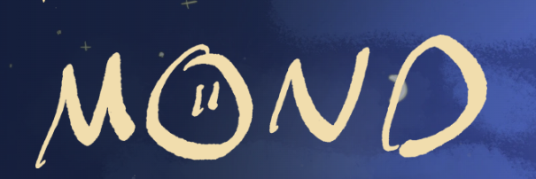
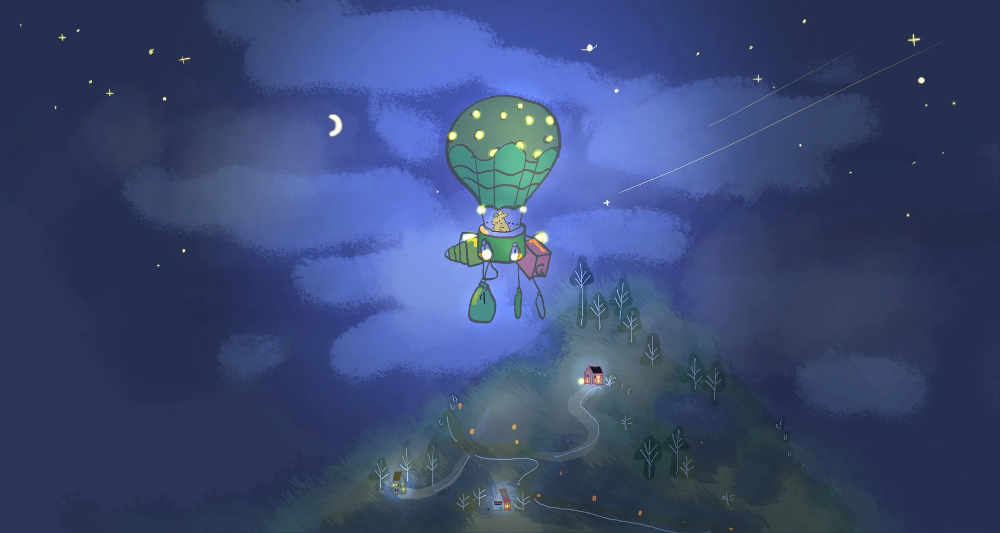
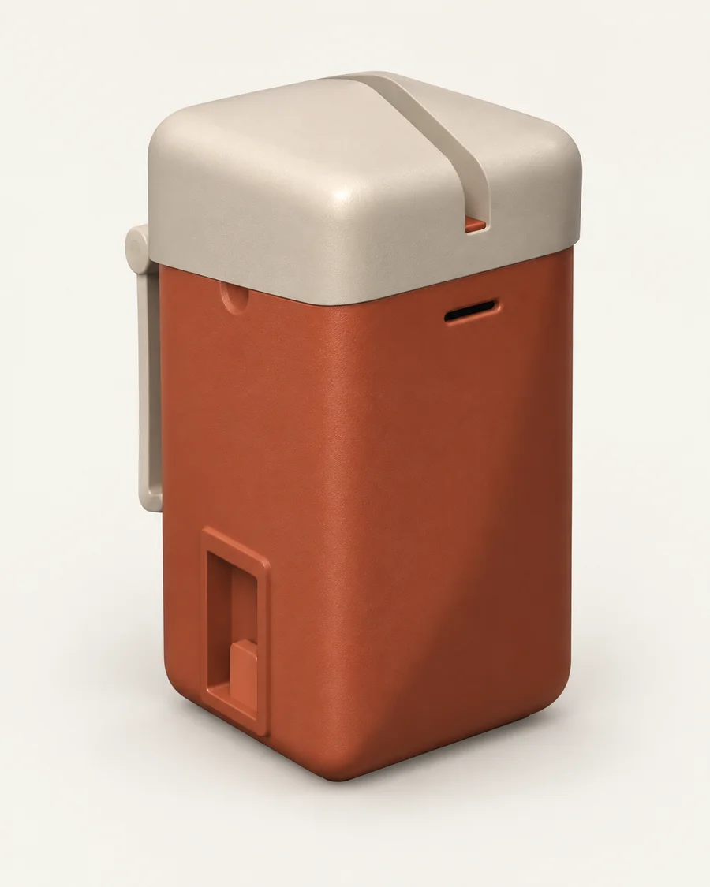
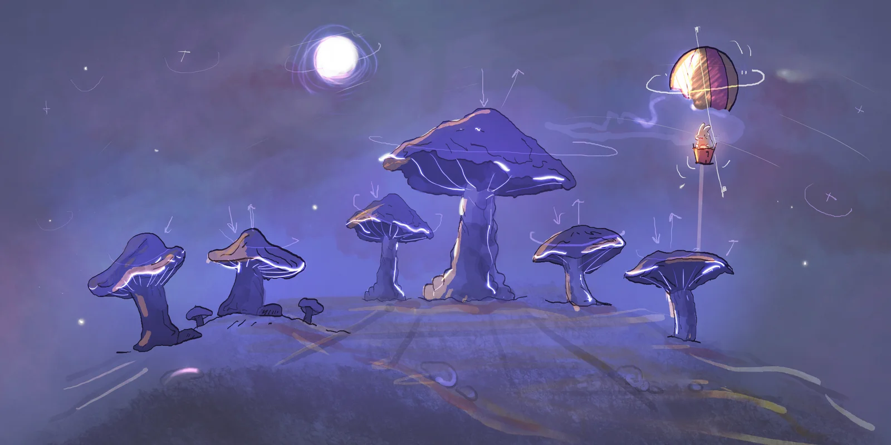

Huizhong Cao
Founder · Product & human-centred AI
Doctoral researcher at Chalmers, bringing a human-centred perspective to MOND’s product direction.


Technology, with a human heart
Life is full of signals. We’re creating a gentler way to listen — through a thoughtful wearable and AI that makes its reasoning clear.
01 / Why we’re here
Workplace wellbeing starts with people. MOND brings physiological signals, personal context and understandable insights into the same conversation — so support can become more thoughtful.

02 / Meet the HRV Pod
Inspired by the softness of a river stone, our wearable concept explores a more comfortable relationship with wellbeing technology.
Currently in development. The image shows a design concept; sensing performance and comfort still need validation.
03 / From signals to understanding
Explore the idea ↓A number alone isn’t the whole story. Our approach makes space for context, uncertainty and the person behind the signal.
HRV is the starting point. We’re designing around signal quality and a personal baseline, so an isolated reading doesn’t have to tell the whole story.
04 / The people behind MOND
MOND brings a human-centred research perspective together with hardware exploration. We’re building a bridge between understanding people and creating something they can use.
Founder · Product & human-centred AI
Doctoral researcher at Chalmers, bringing a human-centred perspective to MOND’s product direction.
Co-founder · Hardware exploration
Based in Shenzhen, with a quantum-computing background and a focus on hardware development.

The imaginative side of MOND
Step into our hand-painted world. Follow a bunny through moonlit landscapes, discover riddles and learn a little music along the way.
Enter the MOND gameA creative companion to our brand. Play in your browser.A few things you might wonder
MOND is in development. We’re exploring the product concept, technical validation and potential pilot collaborations. Get in touch if you’d like to be part of that conversation.
Our initial focus is workplace wellbeing: helping employees and organisations have more informed conversations about support. The experience and service model are still being developed.
Personal physiological information deserves care. Clear consent, understandable explanations and appropriate access boundaries are design priorities. Pilot data practices will need to be agreed before any collection begins.
The game expresses MOND’s creative world: gentle exploration, curiosity and learning. It is a separate browser experience from the wearable concept, and you can enjoy it right now.
The next chapter is a conversation
Interested in a pilot, research collaboration or the future of MOND? We’d love to hear what you’re thinking.
Start a conversationhuizhong@chalmers.se